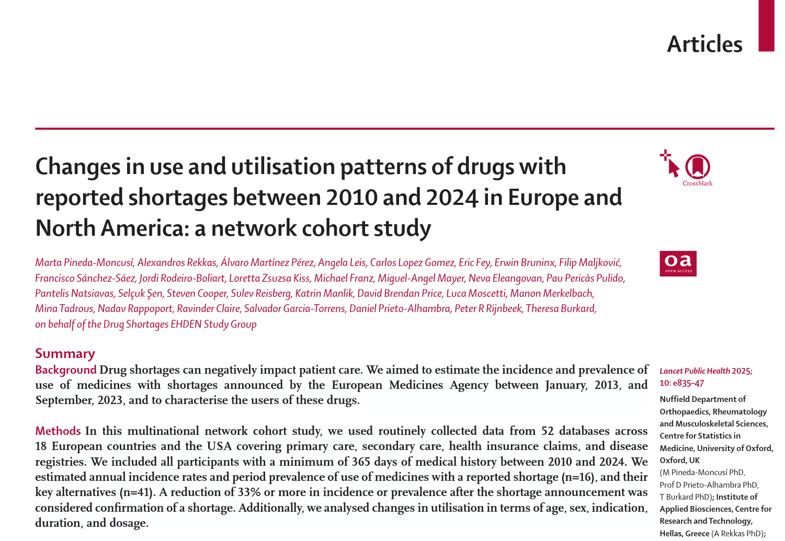
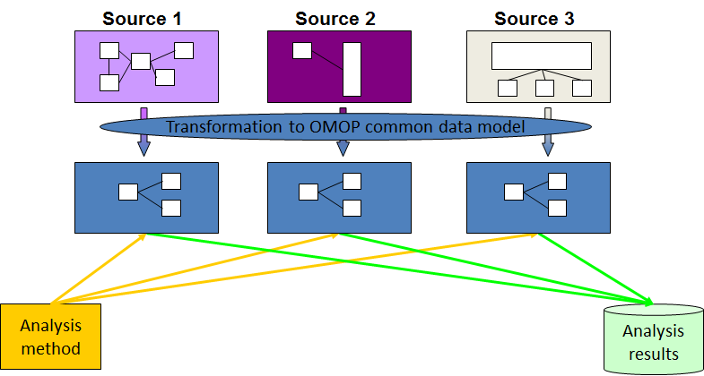
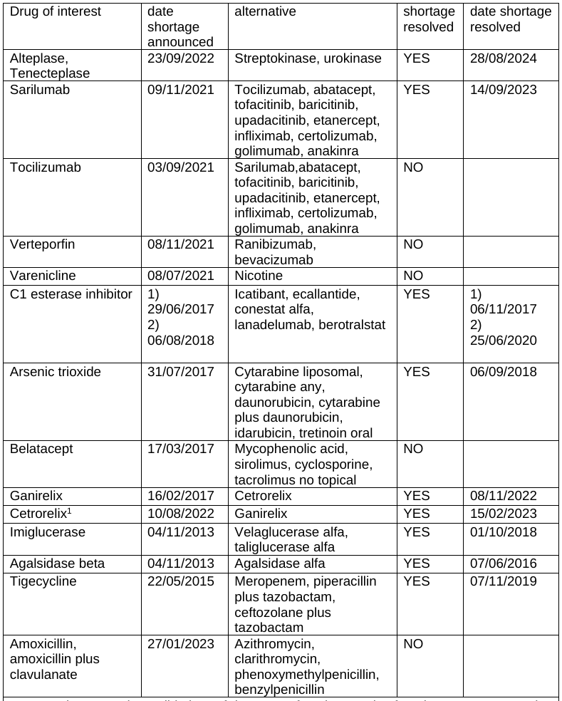
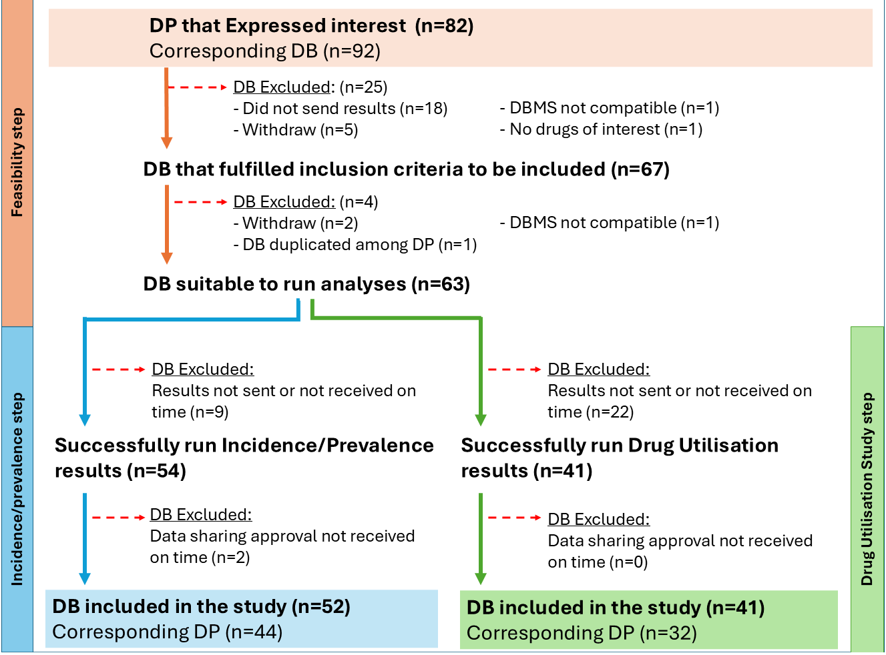
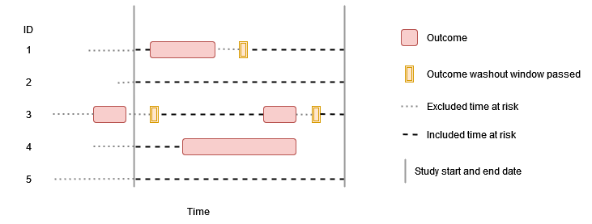
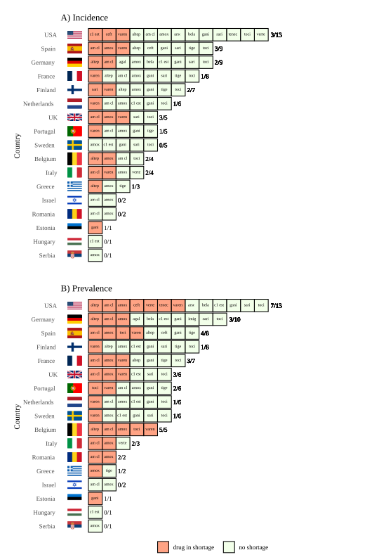
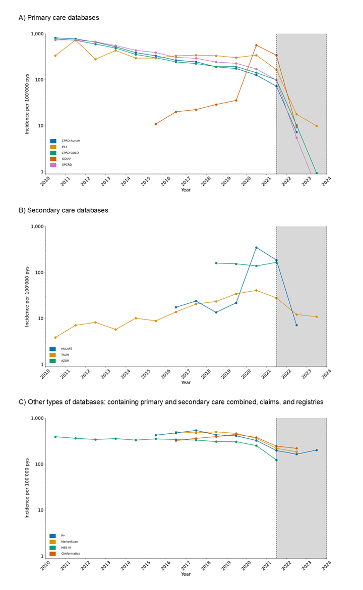
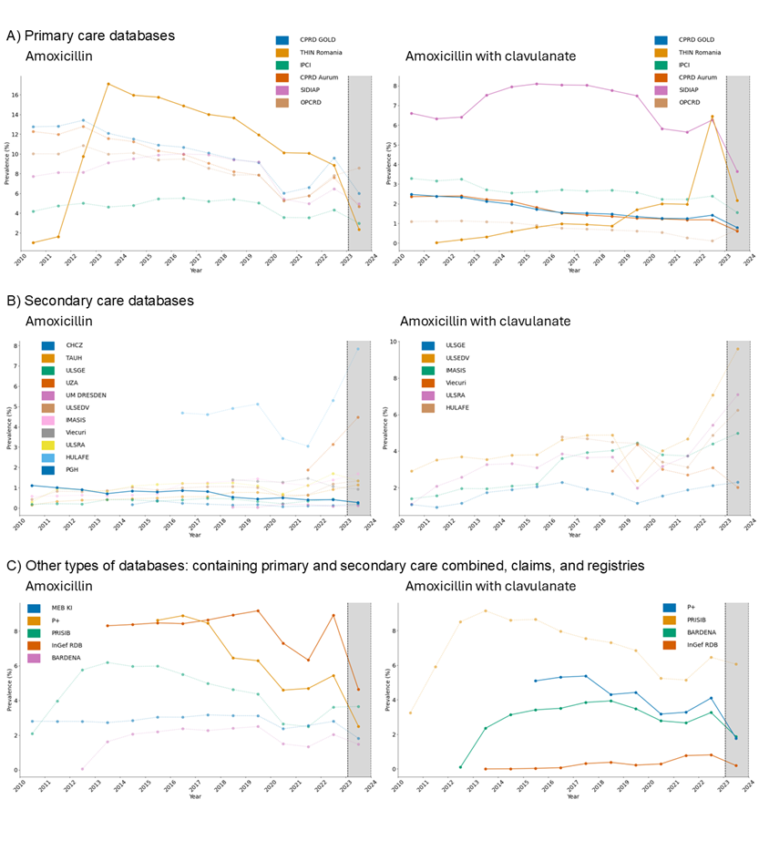
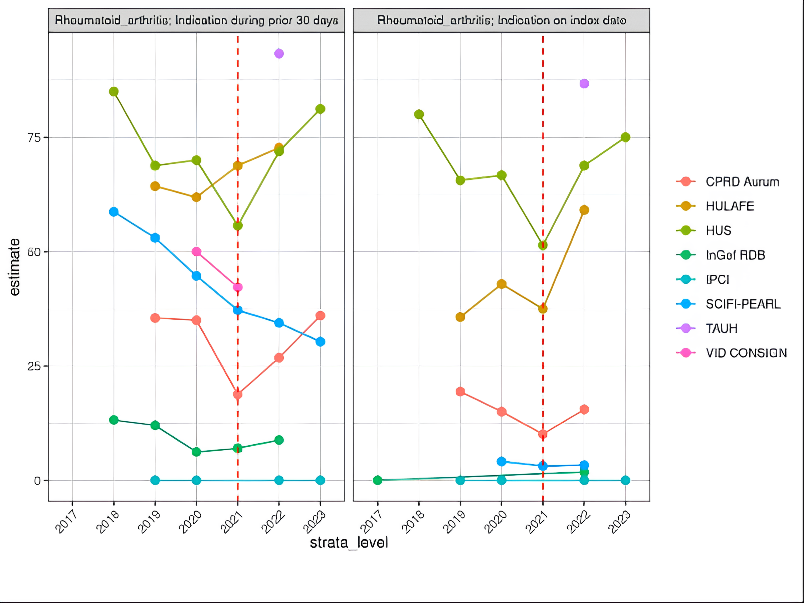
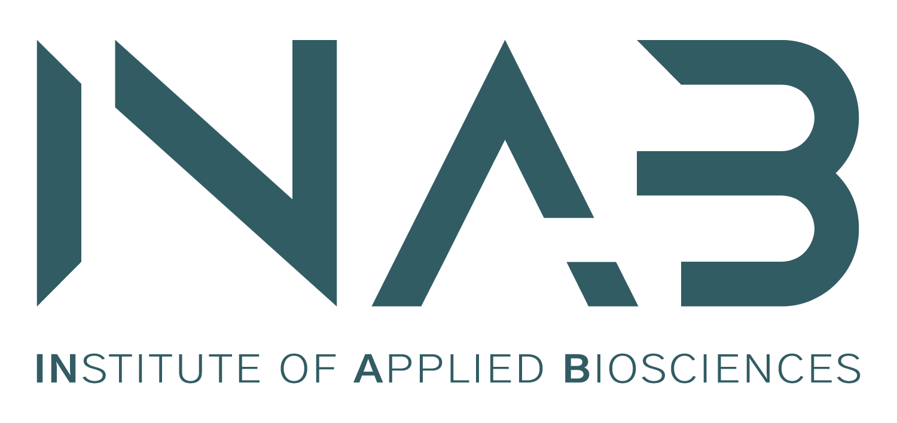

Μεταβολές στα πρότυπα χρήσης φαρμάκων με αναφερόμενες ελλείψεις
Διεθνής μελέτη σε Ευρώπη και Β. Αμερική
Η μελέτη
Η μελέτη

Εισαγωγικά
- Οι ελλείψεις βασικών φαρμάκων αυξάνουν τη θνησιμότητα / τις ανεπιθύμητες ενέργειες.
- Ο ΠΟΥ θεωρεί το φαινόμενο μια σύνθετη παγκόσμια πρόκληση.
- Ο Ευρωπαϊκός Οργανισμός Φαρμάκων (EMA) διατηρεί δημόσιο κατάλογο φαρμάκων υπό επιτήρηση.
Στόχοι της μελέτης
- Διερεύνηση της επίπτωσης και του επιπολασμού περιόδου για φάρμακα με αναφερόμενες ελλείψεις ανά ημερολογιακό έτος.
- Περιγραφή των αλλαγών στο προφίλ των νέων και υφιστάμενων χρηστών.
- 57 φάρμακα συνολικά (16 σε έλλειψη, 41 εναλλακτικά) για την περίοδο 2010–2024.
Το κοινό μοντέλο OMOP-CDM
Γενικά

Εκτέλεση μελετών

HADES
EHDEN Mega-Study
Ανάλυση
- Χρήση του OMOP-CDM μέσω του δικτύου EHDEN.
- Ο αναλυτικός κώδικας γράφτηκε κεντρικά (σε
R). - Ο κώδικας εκτελέστηκε τοπικά από κάθε συνεργάτη-κάτοχο δεδομένων.
- Μοιράστηκαν μόνο συγκεντρωτικά αποτελέσματα.
Φάρμακα ενδιαφέροντος

Μελετήθηκαν:
- 13 αντιβιοτικά
- 7 θεραπείες για τον καρκίνο
- 3 οφθαλμολογικές θεραπείες
- 2 θεραπείες για τη διακοπή του καπνίσματος
- 22 θεραπείες για σπάνιες ασθένειες
- 3 θρομβολυτικές θεραπείες
- 2 θεραπείες για την υποβοήθηση της αναπαραγωγής
- 5 θεραπείες για μεταμοσχεύσεις
Δεδομένα

- Εκδήλωση ενδιαφέροντος:
82 συνεργάτες του δικτύου EHDEN, εκπροσωπώντας 92 βάσεις δεδομένων. - Τελική ένταξη:
63 βάσεις δεδομένων πέρασαν επιτυχώς τους ελέγχους ποιότητας και δυνατότητας υλοποίησης (Feasibility). - Γεωγραφική κατανομή:
18 Ευρωπαϊκές χώρες και οι ΗΠΑ. - Τύποι δεδομένων:
Πρωτοβάθμια φροντίδα, δευτεροβάθμια φροντίδα (νοσοκομεία), δεδομένα ασφαλιστικών αποζημιώσεων (claims) και μητρώα ασθενειών.
Βάσεις δεδομένων
Γ.Ν. Παπαγεωργίου (ΠΓΝ)
- Η βάση δεδομένων:
Το ΠΓΝ είναι ένα από τα μεγαλύτερα δημόσια νοσοκομεία στη Βόρεια Ελλάδα / Κεντρική Μακεδονία. - Το προφίλ των δεδομένων:
Καλύπτει ~1.4 εκ. ασθενείς, περιλαμβάνοντας κλινικά, διοικητικά και εργαστηριακά δεδομένα από το 2000.
Επιτροπές βιοηθικής
- Σε τοπικό επίπεδο λόγω του αποκεντρωμένου σχεδιασμού.
- Οι συνεργάτες έλαβαν έγκριση από την τοπική Επιτροπή Ηθικής και Δεοντολογίας (IRB) ή επίσημη απαλλαγή βάσει της εθνικής νομοθεσίας τους.
Δυνατότητα υλοποίησης (Feasibility)
- Δοκιμαστικές εκτελέσεις (test runs) σε υποσύνολα δεδομένων.
- Απαραίτητη προϋπόθεση ήταν η καταγραφή τουλάχιστον 100 ατόμων με συνταγογράφηση του φαρμάκου ενδιαφέροντος κατά την περίοδο της μελέτης.
- Χρησιμοποιήθηκαν εργαλεία αξιολόγησης της ποιότητας δεδομένων του OHDSI (
DataQualityDashboard).
Μελέτη επίπτωσης και επιπολασμού
- Πληθυσμός:
Όλα τα άτομα στη βάση δεδομένων με τουλάχιστον 365 ημέρες διαθέσιμου ιατρικού ιστορικού. - Περίοδος έκπλυσης (washout period):
Για τον υπολογισμό της επίπτωσης (νέοι χρήστες), εφαρμόστηκε περίοδος 30 ημερών χωρίς χρήση του φαρμάκου πριν τη νέα συνταγογράφηση.
Εκτίμηση επίπτωσης και επιπολασμού
- Ποσοστό Επίπτωσης (Incidence Rate):
Τύπος: Νέοι Χρήστες / Ανθρωπο-έτη σε κίνδυνο (Person-years at risk).
Αβεβαιότητα: 95% διαστήματα εμπιστοσύνης με την ακριβή μέθοδο Poisson.
- Επιπολασμός Περιόδου (Period Prevalence):
Τύπος: Σύνολο Χρηστών / Πληθυσμός σε κίνδυνο μέσα σε ένα ημερολογιακό έτος.
Αβεβαιότητα: 95% διωνυμικά (binomial) διαστήματα εμπιστοσύνης.
Μελέτη επίπτωσης

Μελέτη χρήσης φαρμάκων (Drug Utilization Study - DUS)
- Νέοι (incident) και υφιστάμενοι (prevalent) χρήστες.
- Χαρακτηρισμός σε Επίπεδο Ασθενούς:
- Δημογραφικά: Ηλικία και φύλο κατά την έναρξη.
- Ενδείξεις: Εκτιμήθηκαν μέσω κωδικών OMOP στις 30 ημέρες πριν ή κατά την ημερομηνία έναρξης (index date).
- Διάρκεια Θεραπείας: Υπολογίστηκε από τα δεδομένα συνταγογράφησης.
- Δοσολογία: Εκτιμώμενη ημερήσια δόση.
Ορισμός “έλλειψης”
- Συγκρίναμε τη διάμεσο των 3 ετών πριν την ανακοίνωση του EMA με τη διάμεσο των 3 ετών μετά την ανακοίνωση.
- Ορίσαμε ως “αντίκτυπο έλλειψης” μια \(\ge\) 33% σχετική μείωση στην επίπτωση ή τον επιπολασμό.
Συνολικά αποτελέσματα
- 15 από τα 16 φάρμακα είχαν δεδομένα επίπτωσης (όλα είχαν δεδομένα επιπολασμού).
- 8 φάρμακα εμφάνισαν \(\ge\) 33% πτώση στους νέους χρήστες (επίπτωση).
- 9 φάρμακα εμφάνισαν \(\ge\) 33% πτώση στους συνολικούς χρήστες (επιπολασμός).
- Τα φάρμακα που επηρεάστηκαν περισσότερο:
- Βαρενικλίνη (διακοπή καπνίσματος)
- Αμοξικιλλίνη (αντιβιοτικό)
Συνολικά αποτελέσματα

Βαρενικλίνη
- Ανακοίνωση του EMA (Ιούνιος 2021) λόγω ανίχνευσης προσμίξεων (Ν-νιτροζο-βαρενικλίνη).
- Η επίπτωση έπεσε \(\ge\) 33% σε 12 βάσεις.
- Ο επιπολασμός έπεσε σε 13 βάσεις (επηρεάζοντας 16 από τις 18 χώρες).
- Μετρήσιμη, αντισταθμιστική αύξηση στη συχνότητα χρήσης θεραπειών υποκατάστασης νικοτίνης (εναλλακτικά) σε αρκετές βάσεις (π.χ. Ολλανδία, Βέλγιο).
Βαρενικλίνη (επίπτωση)

Αλλαγές στη διάρκεια θεραπείας
- Η αθροιστική δόση έπεσε από διάμεσο 84 mg (2020) στα 28 mg (2023) στην πρωτοβάθμια φροντίδα (Ολλανδία).
- Διάρκεια Θεραπείας: Στη Φινλανδία (από 104 ημέρες σε μόλις 1) και στο Βέλγιο (από 71 ημέρες στις 30).
Αμοξικιλλίνη
- Έλλειψη (Ιανουάριος 2023) λόγω καθυστερήσεων στην παραγωγή και έξαρσης αναπνευστικών λοιμώξεων μετά την πανδημία COVID-19.
- Ο επιπολασμός έπεσε στο 55% των βάσεων πρωτοβάθμιας φροντίδας και περίπου στο 45% των νοσοκομειακών.
- Παρατηρήσαμε τοπικές αυξήσεις σε εναλλακτικά αντιβιοτικά όπως η Αζιθρομυκίνη, κυρίως στη δευτεροβάθμια φροντίδα.
Αμοξικιλλίνη (επιπολασμός)

Σαριλουμάμπη
- Θεραπεία για τη Ρευματοειδή Αρθρίτιδα (ΡΑ).
- Απότομη πτώση στη χρήση του για ΡΑ και ταυτόχρονη αύξηση στο ποσοστό των ανδρών χρηστών.
- Eκτός ένδειξης (off-label) χρήση για σοβαρή νόσηση από COVID-19.

Αποτελέσματα Ελλάδας
- Στο ΠΓΝ αξιολογήθηκαν 3 φάρμακα (αμοξικιλλίνη, τιγεκυκλίνη και αλτεπλάση)
- Αμοξικιλλίνη: ΔΕΝ ξεπεράστηκε το κατώφλι της μείωσης κατά 33%
- Τιγεκυκλίνη: Εμφάνισε μείωση \(\ge\) 33%.
- Αλτεπλάση: ΔΕΝ ξεπεράστηκε το κατώφλι της μείωσης κατά 33%
Περιορισμοί
- Συνταγογράφηση δεν σημαίνει κατανάλωση από τον ασθενή.
- Μη συνταγογραφούμενα εναλλακτικά (π.χ. επιθέματα νικοτίνης) υποεκπροσωπούνται.
- Χρησιμοποιήσαμε κωδικούς SNOMED ως δείκτες για την ένδειξη χορήγησης των φαρμάκων.
- Η επίδραση της πανδημίας COVID-19 .
Συμπεράσματα
- Οι ελλείψεις φαρμάκων διαταράσσουν ποσοτικά τη φροντίδα των ασθενών, οδηγώντας σε μετρήσιμες πτώσεις (επίπτωση/επιπολασμός) και αναγκάζοντας αλλαγές στη δόση, τη διάρκεια και τη χρήση εναλλακτικών θεραπειών.
- Τυποποιημένα μοντέλα (όπως το OMOP-CDM) μας επιτρέπουν να παρακολουθούμε παγκόσμιες κρίσεις υγείας με ασφάλεια και διαφάνεια.
Ευχαριστώ
